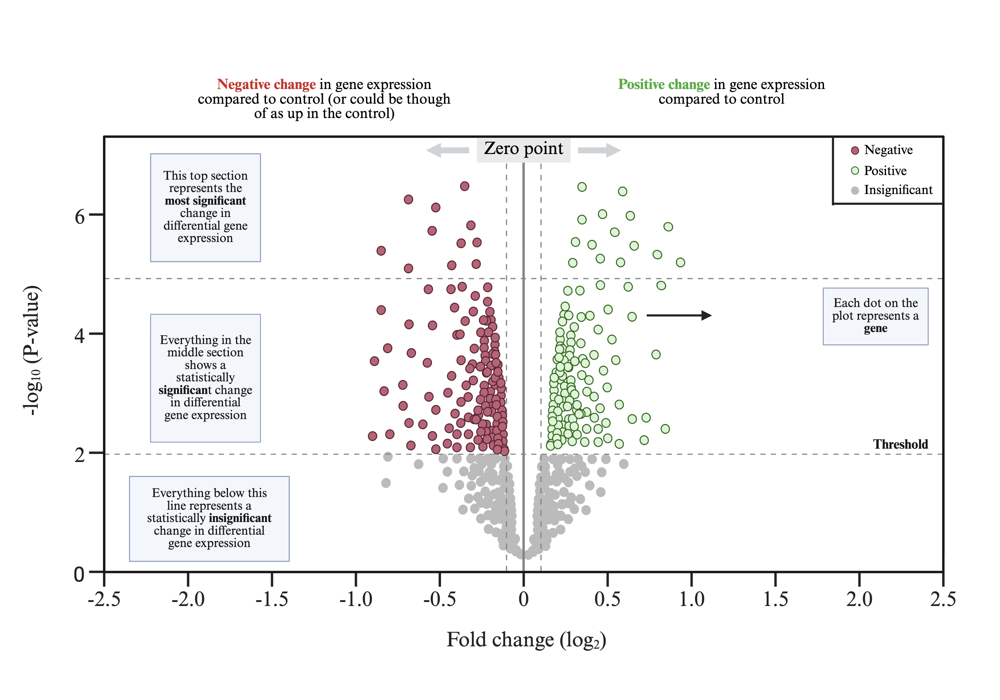

Comparing Diagnoses#
Differential expression analysis: normal versus eosinophilic esophagitis diagnoses#
In this section, we compare gene expression from one cell type in samples with a normal diagnosis to those with eosiniphilic esophagitis. This is an unbiased differential expression analysis because we are not pre-selecting genes of interest. Instead, we test all detected genes and then visualize the strongest differences.
We will need a few new libraries
install.packages("tidyr"")
library(tidyr)
install.packages("ggrepel")
library(ggrepel)
install.packages("dplyr")
library(dplyr)
install.packages("ggplot2")
library(ggplot2)
Create a binary diagnosis group#
First, we create a simplified metadata column called diagnosis_binary. Cells from samples 1 and 4 are from a normal biopsy with no clinical findings while 2 and 3 are from clinical findings of eosinophilic esophagitis.
We will create a column by accessing the meta.data with @ and adding a column with $ and our desired name.
We will that set that to <- an R ifelse command which will perform one function if something is ture and another if it is false.
Our True or False statment will be whether the sample name is Stott_1 or Stott4. If true all the rows in the meta.data associated with Stott_1 and Stott4 with have Normal in this column and all other rows will have “EE” for eosinophilic esophagitis.
so_v1@meta.data$diagnosis_binary <- ifelse(
so_v1@meta.data$samp == "1" | so_v1@meta.data$samp == "4",
"Normal",
"EE"
)
Select a cell type of interest and subset the data#
Choose a cell type of interest.
This tutorial is written so that you can reuse the same workflow for different cell types. Before choosing a cell type, it is helpful to look at the available cell type labels in the Seurat metadata.
unique(Idents(so_v1))
After reviewing the available labels, enter the exact cell type name (as seen in the ouput above) you want to analyze.
celltype_of_interest <- "ENTER_CELL_TYPE_HERE"
Subset the Seurat object to the selected cell type. Now we create a new Seurat object that contains only cells from the selected cell type.
so_v2 <- subset(
so_v1,
idents = celltype_of_interest
)
Verify the subset. After subsetting, confirm that the new object contains only the desired cell type and inspect the distribution of diagnosis groups.
levels(Idents(so_v2))
table(so_v2$diagnosis_binary)
All subsequent analyses in this tutorial will be performed using the subsetted Seurat object so2, allowing differential expression to be evaluated within a single cell type.
Run differential expression analysis#
Seurat uses the active identity class to define groups for comparisons. Here, we tell Seurat to compare cells based on the new diagnosis_binary column.
Idents(so_v2) <- "diagnosis_binary"
Next, we use FindMarkers() to compare your cell type from normal samples against EE diagnoses.
The comparison is:
Normal versus EE
The poisson test is used here because it can be useful for count-like single-cell expression data. The min.pct = 0.1 argument keeps genes that are detected in at least 10% of cells in either group. The logfc.threshold = 0 argument means that Seurat will test all genes that pass the detection filter, rather than only genes above a fold-change cutoff.
markers <- FindMarkers(
so_v2,
ident.1 = "Normal",
ident.2 = "EE",
assay = "RNA",
slot = "data",
test.use = "poisson",
min.pct = 0.1,
logfc.threshold = 0
)
Format the differential expression results#
The output from FindMarkers() stores gene names as row names. For plotting and filtering, it is easier to move the gene names into their own column.
We also calculate a transformed adjusted p-value called logp, which is useful for a plot we will make called a volcano plot. Larger logp values indicate stronger statistical significance.
Finally, we classify genes as:
up_in_Normal: higher in normal samplesup_in_EE: higher in non-normal samplesns: not significant by the chosen thresholds
The code below uses the %>% operator from the dplyr package. You can think of %>% as meaning “and then”. Rather than creating many intermediate objects, it takes the result of one step and passes it directly to the next. This makes the code read almost like a recipe:
Start with the markers table and then (%>%)
Move the row names into a new column called gene and then (%>%)
Create two new columns called logp and direction.
We use the dplyr mutate() command to add new columns. The column names added are denoted before the = sign.
The logp column contains the transformed adjusted p-value, calculated as -log10(adjusted p-value).
The direction column categorizes each gene based on both its fold change and statistical significance.
markers <- markers %>%
tibble::rownames_to_column("gene") %>%
mutate(
logp = -log10(p_val_adj + 1e-300),
direction = case_when(
avg_log2FC > 1 & p_val_adj < 0.05 ~ "up_in_Normal",
avg_log2FC < -1 & p_val_adj < 0.05 ~ "up_in_EE",
TRUE ~ "ns"
)
)
Select top genes for labeling#
To keep the plot readable, we will only label the top significant genes. Here, we select up to 50 significant genes ranked by adjusted p-value.
Once again we use the %>% to first take the object we created markers and then filter() it down to only those genes that are not (!=) ns (the not significant label we created)
and then arrange the results with the smallest significant value first with the nested arrange() and desc() commands from dplyr.
See some nice visual documentation of using arrange on the dplyr cheatsheet
Click here to visit the visual documentation for the dplyr
You can see the arrange command on the first page of the cheatsheet in the middle column half way down.
And the (%>%) we will also use the slice_head command found in the visual cheatsheet in the middle row right above arrange() to select the first 50 rows.
top_genes <- markers %>%
filter(direction != "ns") %>%
arrange(desc(logp)) %>%
slice_head(n = 50)
Make a volcano plot#
A volcano plot shows both the size of the expression difference and the statistical significance for every gene tested between the two groups.

The x-axis shows average log2 fold change. Genes farther to the right are higher in the normal group, while genes farther to the left are higher in the other diagnosis group.
The y-axis shows -log10(adjusted p-value). Genes higher on the plot are more statistically significant.
We will be using the ggplot.
Click here to visit the visual documentation for the ggplot2
ggplot(markers, aes(x = avg_log2FC, y = logp, color = direction)) +
geom_point(alpha = 0.6, size = 1.8) +
geom_text_repel(
data = top_genes,
aes(label = gene),
size = 3,
max.overlaps = 15
) +
scale_color_manual(
values = c(
up_in_Normal = "#B4EEB4",
up_in_Other = "#CD5C5C",
ns = "gray70"
)
) +
geom_vline(
xintercept = c(-1, 1),
linetype = "dashed",
color = "black",
size = 0.4
) +
geom_hline(
yintercept = -log10(0.00001),
linetype = "dashed",
color = "black",
size = 0.4
) +
labs(
x = "Average Log2 Fold Change: Normal versus Other",
y = "Significance: -Log10 adjusted p-value",
title = "Differential Gene Expression: Normal versus Eosinophilic Esophagitis"
) +
theme_minimal()
Visualize selected genes#
After identifying genes of interest from the differential expression analysis, we can visualize their expression across individual samples.
Select a few genes from your volcano plot and replace the gene names below with yours of interest.
upgenes <- c(
"TAOK1",
"IGF2R",
"FAM110A",
"ENSG00000250696",
"RPS29",
"CLEC4OP"
)
Visualize selected genes with a dot plot#
After identifying genes of interest from the differential expression analysis, we can visualize their expression across diagnosis groups using a dot plot.
In a Seurat DotPlot(), the color of each dot shows the average expression of a gene in each group. The size of each dot shows the percentage of cells in that group that express the gene.
Click here to visit the Seurat documentation for a dotplot
First, create a vector of colors to show low versus high gene expression levels, you may change these to other based on your preference.
Click here to visit a site that displays many R color codes
colors2 <- c("bisque3", "snow", "darkred")
Create a DotPlot() Click here to visit the documentation for DotPlot
DotPlot(
so_v2,
features = upgenes,
group.by = "diagnosis_bindary"
) +
scale_color_gradientn(colors = colors2) +
labs(
x = "Gene",
y = "Diagnosis",
color = "Avg expression",
size = "Pct expressed"
) +
theme_classic() +
theme(
axis.text.x = element_text(angle = 45, hjust = 1),
axis.text.y = element_text(face = "bold"),
axis.title = element_text(size = 12),
legend.title = element_text(size = 11)
)
Interpretation notes#
Are there any genes that are revealed to be specific to your cell type and the diagnosis? From here you could design follow-up experiments or find public data to further validate your findings.
You can also visit the Human Tissue Atlas to see if the gene is specific to your cell type!
Because single-cell data often contain strong patient-to-patient variation, genes identified in this analysis should be interpreted carefully. Follow-up plots by sample_id are important because they help distinguish broad biological patterns from effects driven by one or two samples.
Alternative tests, including MAST or logistic regression, can also be explored. If adjusted p-values are very high, this may reflect limited sample size, strong donor-level variability, low expression of many genes, or the need for pseudobulk analysis at the patient level.